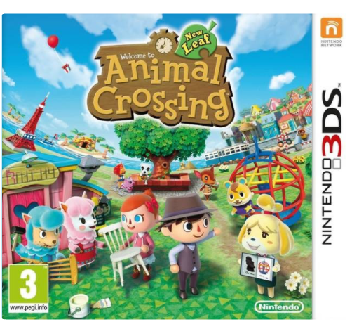
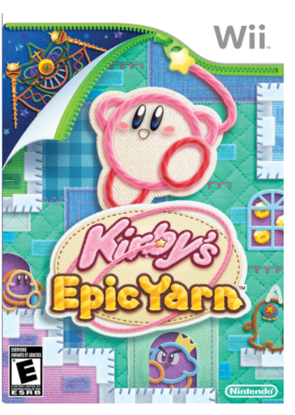
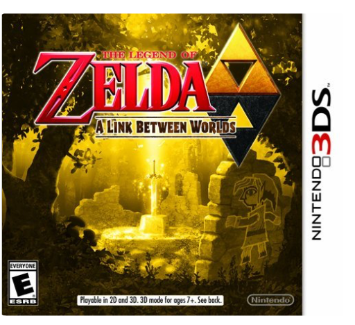
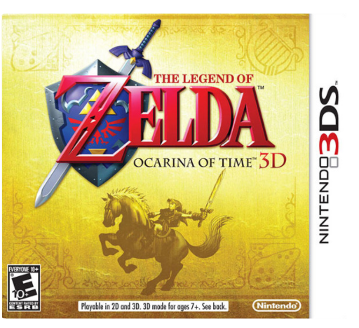

 Animal Crossing: New LeafNintendo Welcome to Animal Crossing where, as mayor of your own town, you make the decisions that shape your town and your life. Experience a living, breathing world where new friends and new discoveries await every day, morning, noon, and night. Express yourself by customizing your character, your house, and your town as you create your own ideal world.
Animal Crossing: New Leaf is loaded with characters, items, and activities to enjoy all year long. Customise outfits in countless ways. Furnish your house with an extensive variety of furniture, carpet, and wall decorations to reflect your personality. Visit the Main Street Shopping area and Happy Home showcase. Swim in the ocean to find rare shell fish. Collect insects and fossils all year long. As mayor, make the big decisions about what build, business hours for shops, and other new ways to customize your town to your liking. Then connect with friends to show off what makes your character, your house, and your town unique.
Nintendo 2224546 - ANIMAL CROSSING : NEW LEAF Beat The Beat: Rhythm ParadiseNintendo From playing golf with mandrill to controlling a flowerpot-punching karate man, everything has to be done in time to the beat to win. Try not to let the craziness occurring on screen distract you from the music because it is keeping the rhythm that counts. If you do stop to look at what’s going on then you won’t be disappointed, as each of the 50 rhythm games has their own short story featuring the classic Rhythm Paradise humour In a European exclusive, fans will also be able to switch between the Japanese and English soundtracks covering many musical styles.
Be careful not to miss a beat! Losing the rhythm in Beat the Beat: Rhythm Paradise means you lose the game - but don’t worry, the controls are really easy to pick up! Just press the A Button or the A Button and B Button together! Half the fun is learning how to master each situation, and while the action is just as challenging as fans of the series would expect, beginners won’t be stuck for long thanks to the new feature that allows you to check the correct performance of the song to help you to master the required rhythm.
Some games can be played in co-op mode, so why not invite a friend to play with you? The aim is to play together and master the different rhythms; the more compatible you are, the higher your score! If you’re feeling particularly competitive then why not challenge your friend to play one of the Endless Dual Games? The fun doesn’t stop but the action becomes progressively harder as you go on - a real test of your rhythm skills.
Players must tap either the A Button or both A and B Buttons together on their Wii Remote Controllers in time to the music to pass each challenge. The fun and challenge of the game come from feeling the rhythm and hitting the beats accurately.All the games are new to this edition, though people who have played the Nintendo DS version might recognise fami |  Kirby's Epic YarnNintendo In Kirby's Epic Yarn, unravel enemies and weave your way through a Kirby adventure unlike anything you've ever seen. Kirby's first platform game since the Nintendo 64 days introduces an amazing new look based on animated yarn and a world of cloth and textiles. The creative approach is woven directly into the gameplay and allows the ever-morphing Kirby to take on a variety of new forms. A simultaneous two-player mode will have players of all skill levels enjoying the one-of-a-kind experience of Kirby's epic yarn.  The Legend of Zelda: A Link Between WorldsNintendo Two worlds collide in an all-new adventure set in the world of Super NES classic The Legend of Zelda: A Link to the Past. In this newly spun tale, Link transforms into a living painting to cross into a dark, parallel dimension mirroring Hyrule. Conquer the puzzles, traps, and hidden rooms of deadly dungeons to save both worlds from certain doom!
Brought to life in 3D, this beloved, top-down world is the perfect backdrop for a sweeping new tale. Dungeons sink deep below the screen as Link and his attacks pop out, highlighting the nonstop action. The pace is faster than ever, especially since you can swap items on the Nintendo 3DS touch screen. Shoot an arrow, toss a boomerang, bomb a wall, then merge into a painting to slide between two worlds — all in a matter of seconds. With gameplay, visuals, and controls this smooth and consistent, no Zelda adventure has ever been so action-packed.
Key Features An all-new adventure in the world of The Legend of Zelda: A Link to the PastBecome a living painting to slide within walls and between two dimensions at warSink into the classic, top-down world of Zelda with 3D visuals at 60 FPSEasily swap inventory items on the Nintendo 3DS touch screenImmerse yourself in a new adventure set in a familiar world
view larger Strategically become a painting within the wall to navigate your way through gameplay
view larger Switching between items is easier than ever on the touch screen
view larger Utilize 3D functionality to truly experience the top-down world
of Zelda
view larger  The Legend of Zelda: Ocarina of Time 3DNintendo Please note 3DS console required to play - not compatible with original DS consoles
The Legend of Zelda: Ocarina of Time 3D takes the Nintendo classic - one of the most critically acclaimed games ever made - and returns it to the Nintendo 3DS system with the added depth and realism of stunning, glassesfree 3D visuals.
In this game, Link sets off on a legendary journey through time to stop Ganondorf, the Gerudo King of Thieves who is seeking the Triforce, a holy relic that gives its holder ultimate power.
The graphical upgrades and three-dimensional depth breathe new life into the expansive world of Hyrule. An improved and intuitive interface, coupled with the easier navigation offered by playing in a world with 3D visuals, give players better control as they solve puzzles, travel through time and explore this immersive world.
Whether you're a first-time player or a regular visitor to Hyrule, The Legend of Zelda: Ocarina of Time is a new adventure for everyone. A Zelda classic now in glasses-free 3D: Amazing 3D visuals and a complete graphical overhaul bring one of gaming's most beloved and celebrated franchises to life, putting the awe-inspiring world in the palm of your hand for you to explore whenever you likeNew controls using the Nintendo 3DS system's technologies: The Legend of Zelda: Ocarina of Time 3D retains the analog control of the original with the Circle Pad on Nintendo 3DS, but greatly improves ease of use with a touch-based inventory system. Switching items has never been simpler or quickerFPS action: Players can also use the first-person shooting (camera-controlled) feature utilizing the gyro sensor |


 Made with Delicious Library
Made with Delicious Library